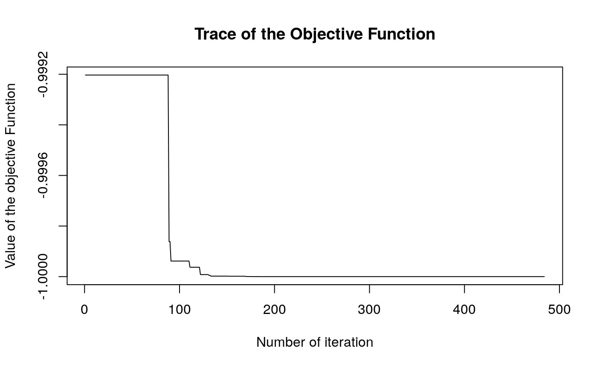

This is an implementation of Karaboga (2005) ABC optimization algorithm. It was developed upon the basic version programmed in C and distributed at the algorithm’s official website (see the references).
Any evident (precision) error should be blamed to the package author (not to the algorithm itself).
Example
library(ABCoptim)
# Function to optimize. Min at (pi,pi)
fun <- function(x) {
-cos(x[1])*cos(x[2])*exp(-((x[1] - pi)^2 + (x[2] - pi)^2))
}
# Since it is stochastic, we need to set a seed to get the same
# results.
set.seed(123)
# Finding the minimum
ans <- abc_optim(rep(10,2), fun, lb=-20, ub=20, criter=200)
ans##
## An object of class -abc_answer- (Artificial Bee Colony Optim.):
## par:
## x[1]: 3.141593
## x[2]: 3.141593
##
## value:
## -1.000000
##
## counts:
## 484plot(ans)
References
D. Karaboga, An Idea based on Honey Bee Swarm for Numerical Optimization, tech. report TR06,Erciyes University, Engineering Faculty, Computer Engineering Department, 2005 http://mf.erciyes.edu.tr/abc/pub/tr06_2005.pdf
Artificial Bee Colony (ABC) Algorithm (website) http://mf.erciyes.edu.tr/abc/index.htm
Basic version of the algorithm implemented in ‘C’ (ABC’s official website) http://mf.erciyes.edu.tr/abc/form.aspx